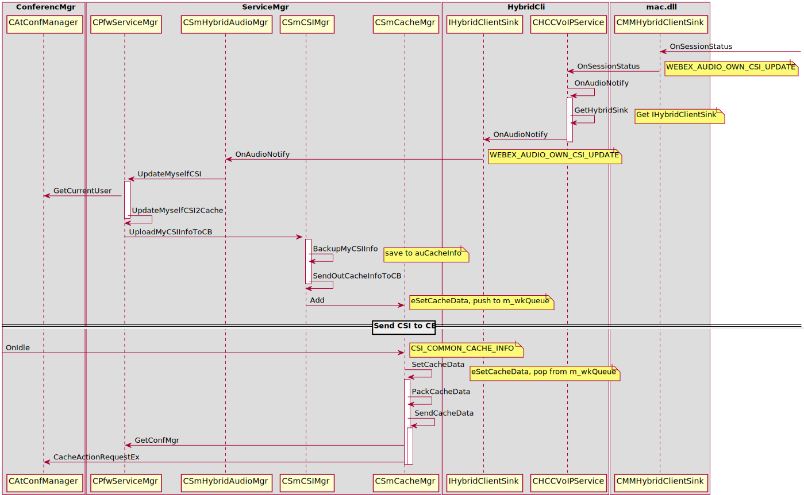

A Capture Source ID (CSI) is used to uniquely identify a physical media capture source as a camer or microphones within an RTP session.
Win Client Allocate and Subscribe CB Memory Cache
Win Client send VOIP CSI to CB Memory Cache

CSI Payload Format
Format for Audio:
<?xml version="1.0" encoding="UTF-8"?> <CMR> <Version>1.0</Version> <User> <AttendeeID>%d</AttendeeID> <NodeID>%d</NodeID> <UserType>%d</UserType> </User> <CSIs> <CSI type="audio">%s</CSI> </CSIs> </CMR>Format for Video:
<?xml version="1.0" encoding="UTF-8"?> <CMR> <Version>1.0</Version> <User> <AttendeeID>%d</AttendeeID> <NodeID>%d</NodeID> <UserType>%d</UserType> </User> <CSIs> <CSI type="video">%s</CSI> (ZERO mean: 0xff,ff,ff,ff) </CSIs> </CMR>Format for Sharing:
<?xml version="1.0" encoding="UTF-8"?> <CMR> <Version>1.0</Version> <User> <AttendeeID>%d</AttendeeID> <NodeID>%d</NodeID> <UserType>%d</UserType> </User> <CSIs> <CSI type="sharing">%s</CSI> (ZERO mean: 0xff,ff,ff,ff) </CSIs> </CMR>
WebEx PC Client notify TS or TPGW its CMR Client Version
When PC Client notify TS or TPGW
- CAtConfAgent::TryAvailableCBSvr
- IConferenceContext::GetULONG(CONF_CONTEXT_VMR_FLAG_ID)
- CConfRosterInfoPDU::GenerateXMLPDU
- CAtConfAgent::AgentEnroll
- IConferenceContext::GetULONG(CONF_CONTEXT_VMR_FLAG_ID)
- CConfRosterInfoPDU::GenerateXMLPDU
What’s the CMR Client Version format:
<CMgr ver="1.0"> <UAID>521</UAID> <CS>0</CS> <FG>20</FG> <EA>ciscotp@cisco.com</EA> <PG>94976</PG> <UT>4</UT> <CLID>385</CLID> <ASVideoBandwidth>768</ASVideoBandwidth> <ASVideoProfileLevelId>4382733</ASVideoProfileLevelId> <ASVideoMaxMbps>18000</ASVideoMaxMbps> <ASVideoMaxFs>9000</ASVideoMaxFs> <CMRClientVersion>4</CMRClientVersion> </CMgr>